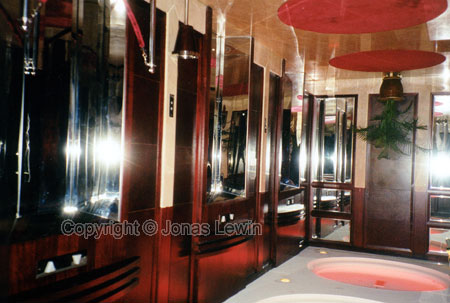
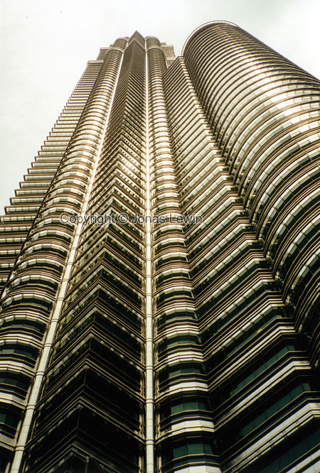
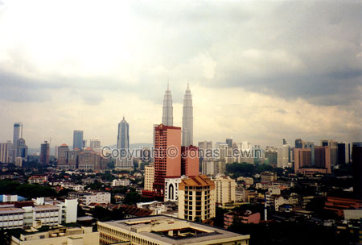
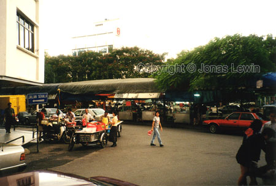

|
Malaysia, Kuala Lumpur, 1999-07
I
was impressed by the hotel.
This is the city with the worlds tallest building - KLCC. The building is
featured in "Entrapment" with Sean Connery. It's worth a visit. You feel so
tiny, looking up at the building from the ground.
View
from my hotel window.
The food here is not as much in my taste as in the other countries, like
China and Thailand. If you feel like trying, you will get a culinary
experience. If don't fell like trying, then you can always get great Chinese
food here. It is however a little bit cleaner than Bangkok, and the
car-fumes are not as intense. Their English are somewhat better in general,
but they still have a long way to travel to be called good at english.
Places to go shopping in KL: Sunaiwan Plaza and Imbi Plaza. These buildings
are only a few meters from each other, so this is a real tourist trap.
Everyone wants to buy something with them home. The first one is where you
will find clothes, cameras and those things. Just like an American mall.
Only, just as far as those countries are, the same goes for the price; a lot
cheaper in Malaysia...
The second one is knee-deep in computer stuff. Tons of shops, all selling
almost the same thing, like motherboards, memory etc. You can also find a
lot of pirate software, pirate VCDs to a reasonable price (around 2-4 US$
per CD).
The rain here is nothing like back home. Here it rains constant for 2-3
hours around noon, and no wind. I'm used to hear the rain hit the window,
but due to the lack of wind, the rain appears to be silent. When the rain
stops, there is still no wind to remove the moist in the air, so it remains
very humid until the next day. Not even during the night will the humidity
disappear, like I'm used to.
|